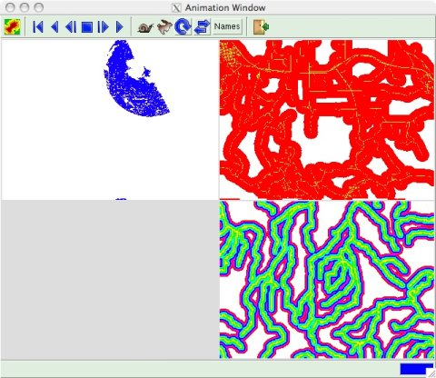
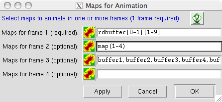
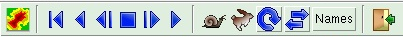

ANIMATION TOOL (gis.m)
The Animation Tool is an interactive interface to display a series of
raster maps as an animation. Rasters can be added individually or as a
prefix followed by a sequential number suffix.
Using the Animation Tool
The Animation Tool is started from the File menu or
from the animation button ( )
on the GIS Manager toolbar.
)
on the GIS Manager toolbar.
The main animation window has a toolbar for selecting maps to display
and controling the animation, and a display area. The display area can
show a single, full-screen animation, or two to four simultaneous
quarter-screen animations.

Selecting Maps to Animate
Click the maps button ( )
on the main animation window toolbar to open a map selection window.
)
on the main animation window toolbar to open a map selection window.

A map or map series must be entered in the entry for frame 1. If a map
series is only entered for frame 1, a single, full-frame animation will be
displayed. If map series are entered for other frames, two to four
quarter-frame animations will be displayed (see example image above).
Raster maps can be added individually or as a prefix followed by a sequential
number suffix.
- To enter maps individually, enter
each map name separated by a comma (no space) from the previous map
name (see the entry for frame 3 in the example image above).
- For a map series entered in the prefix/suffix format, the suffix can be
specified as a range of numbers in side parentheses. In the example image
above, "map(1-4)" will specified raster maps map1 through map4.
-
The suffix for a map series also can be specified using Unix-style wildcard
matching. In the examle above "rdbuffer[0-1][1-9]" specifies raster
maps rdbuffer01 through rdbuffer19.
- Multiple specification
forms can be mixed on a single entry line. For example, you could specify
"rast-a,rast-b,rast-(1-50),rast[0-9][0-9]". This will specify rast-a,
rast-b, rast-1 through rast-50, and rast00 through rast99.
Controlling the Animation
The animation can be controlled in various ways by using the buttons on the
main animation window toobar.

 The rewind button will set the display to the first animation frame.
The rewind button will set the display to the first animation frame.
 The reverse button will play the animation in reverse order.
The reverse button will play the animation in reverse order.
 The reverse step button will step
through the animation frame by frame in reverse order.
The reverse step button will step
through the animation frame by frame in reverse order.
 The pause button will stop the
animation at whatever frame is visible when the animation is stopped.
The animation will be continued from this frame when a forward or reverse
button is pressed.
The pause button will stop the
animation at whatever frame is visible when the animation is stopped.
The animation will be continued from this frame when a forward or reverse
button is pressed.
 The forward step button will step
through the animation frame by frame.
The forward step button will step
through the animation frame by frame.
 The play button will display the maps
of the animation in the order they are listed in the map selection window.
The play button will display the maps
of the animation in the order they are listed in the map selection window.
 The slow button will increase the
time between the display of each consecutive frame in the animation,
causing it to to slow down.
The slow button will increase the
time between the display of each consecutive frame in the animation,
causing it to to slow down.
 The fast button will decrease the
time between the display of each consecutive frame in the animation,
causing it to to speed up.
The fast button will decrease the
time between the display of each consecutive frame in the animation,
causing it to to speed up.
 The repeat switch will cause the
animation to repeatedly cycle from first to last frame if the play button
is pressed, or cycle from last to first if the reverse button is pressed.
The repeat switch will cause the
animation to repeatedly cycle from first to last frame if the play button
is pressed, or cycle from last to first if the reverse button is pressed.
 The alternating switch will cause the
animation to alternately play from first frame to last frame, and from last
to first.
The alternating switch will cause the
animation to alternately play from first frame to last frame, and from last
to first.
[Names] The names switch will cause the file names of the maps used for the
animation to display in the lower left corner of each animation frame.
 The Exit button will quit the Animation Tool.
The Exit button will quit the Animation Tool.
SEE ALSO
gis.m manual
gis.m: GEORECTIFY TOOL
gis.m: PROFILE TOOL
xganim
r.out.mpeg
AUTHORS
Michael Barton, Arizona State University, Tempe, Arizona, USA
Glynn Clements
Last changed: $Date$
Main index - Full index